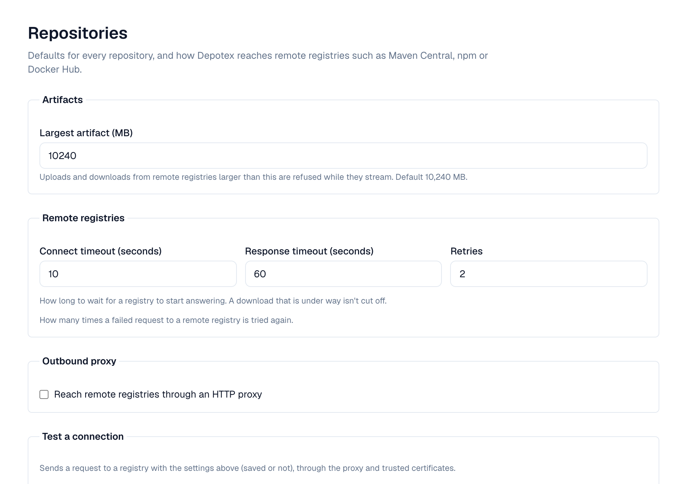

1. Overview
Settings → Repositories → Defaults and network holds defaults for every repository and how Depotex reaches remote registries such as Maven Central, npm or Docker Hub: the upstreams that proxy repositories fetch from, and the Test connection of an upstream. Super admins only; available on every license tier. Changes reach every server within a few seconds. The Repositories group in Settings also holds Quarantine, the Block list, Integrity and, on Enterprise, Vibe artifacts.

2. Artifacts
Largest artifact (10 GB by default) applies to uploads and to files downloaded from remote registries. A file over it is stopped while it streams, and nothing of it is kept.
3. Remote registries
| Setting | Default | Meaning |
|---|---|---|
| Connect timeout | 10 s | How long to wait to connect, and for the TLS handshake |
| Response timeout | 60 s | How long to wait for a registry to start answering. A download that is under way isn't cut off |
| Retries | 2 | How many times a failed request is tried again |
4. Outbound proxy
Turn on Reach remote registries through an HTTP proxy when servers can only reach the internet through a proxy. Enter it as http://host:port (or https://), with a username and password when it needs them; the password is stored encrypted and never shown again. Don't use the proxy for lists hosts that are reached directly, one per line: a host (nexus.corp), a domain and its subdomains (.corp.example), an IP address or range (10.0.0.0/8). Local addresses never use the proxy.
5. Test a connection
The Test a connection panel beside the settings takes a registry's URL (or one of the shortcuts: Maven Central, npm, Docker Hub); select Test. Under it, The test uses shows the route (the proxy, or direct), the timeouts, retries and how many certificates you added. Depotex sends a request with the settings on the page — saved or not — through the proxy and trusted certificates, and reports the time and HTTP status, or what failed: an untrusted, expired or mismatched certificate, the proxy unreachable or refusing the password, the host name not found, no connection, or no answer in time. Any HTTP answer, even 401 or 404, means the path works.
6. Trusted certificates
Depotex trusts the operating system's CA certificates. To reach registries whose certificates are signed by your organization's own CA, add that CA here.
- Paste PEM — Paste one certificate (-----BEGIN CERTIFICATE-----) and, optionally, a name. Private keys are refused.
- Or load from a server — Enter a host, host:port or URL and select Load. Depotex shows the certificates the server presents, numbered from the server's own, each with its issuer, expiry and SHA-256 fingerprint, without trusting them; select Trust on the CA that signed it (usually the last one).
Each certificate is marked Valid, Expires in N days (30 days or less) or Expired; select it to see its subject, issuer, expiry and SHA-256 fingerprint. Add certificate opens the paste and load-from-a-server forms. Removing one stops trusting registries it signed. Up to 100 certificates.
Load from a server connects directly, not through the outbound proxy. Check the fingerprint with the registry's owner before trusting a certificate.
7. Defaults for operators
| Environment variable | Default | Meaning |
|---|---|---|
| REPOSITORY_MAX_ARTIFACT_SIZE | 10737418240 (10 GB) | Largest artifact in bytes until a super admin saves settings (1 MB to 1 TB) |
| REMOTE_CONNECT_TIMEOUT | 10s | Connect timeout (1s to 300s) |
| REMOTE_READ_TIMEOUT | 60s | Response timeout (1s to 3600s) |
| REMOTE_RETRIES | 2 | Retries (0 to 10) |
Set them the same on every server. Once settings are saved on the page, the page's values apply. A server with an invalid value doesn't start.
8. Events
repository_settings.update, trusted_certificate.create and trusted_certificate.delete (before and after, blocking) are raised on changes. They never carry the proxy password. See Events.
9. Permissions
| Permission | Who | Allows |
|---|---|---|
| repository_settings:manage | Super admins only | Viewing and changing these settings and the trusted certificates, and testing connections |
Every change and every connection test is recorded in the audit log.